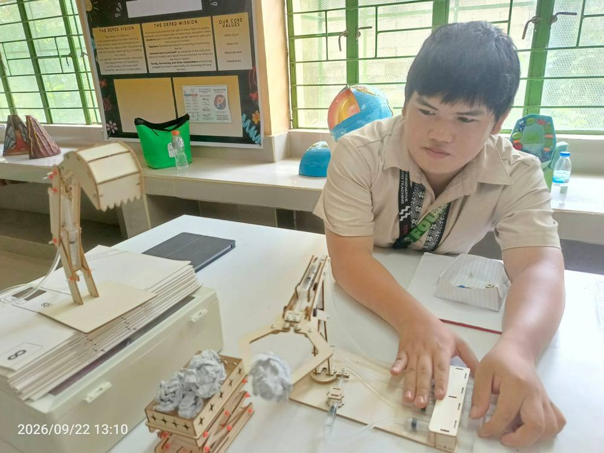
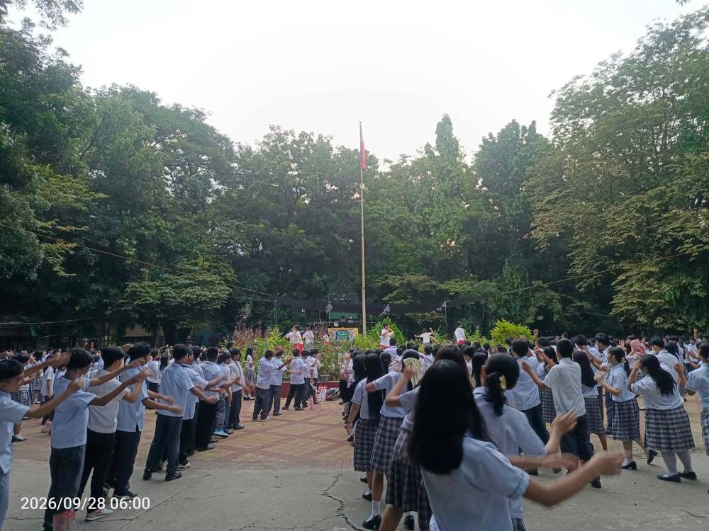
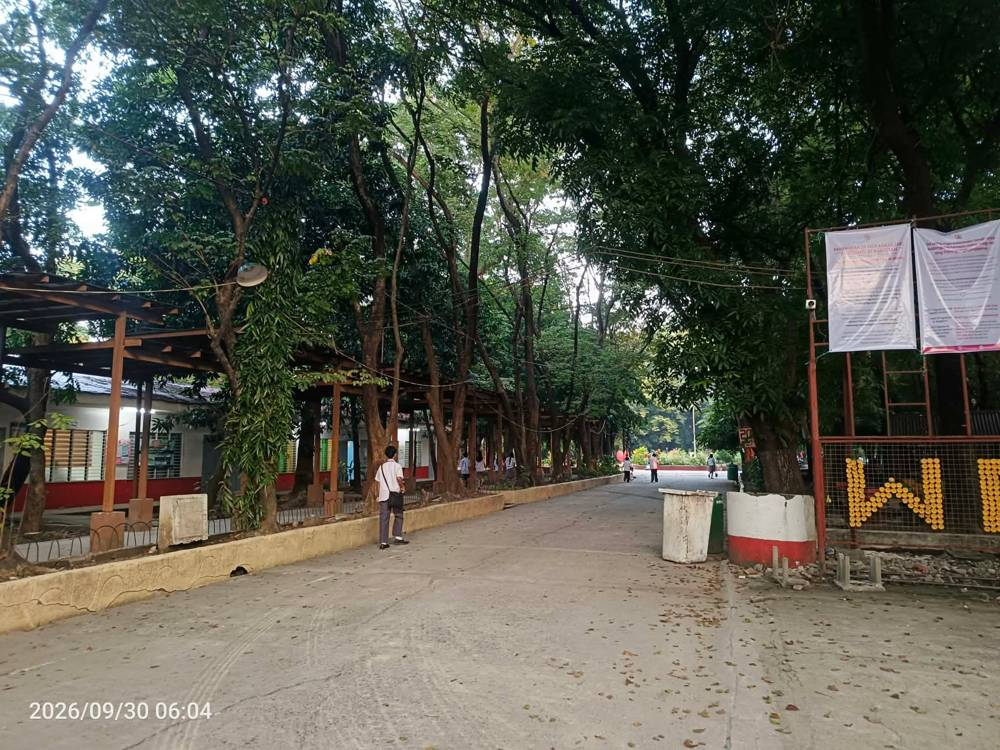
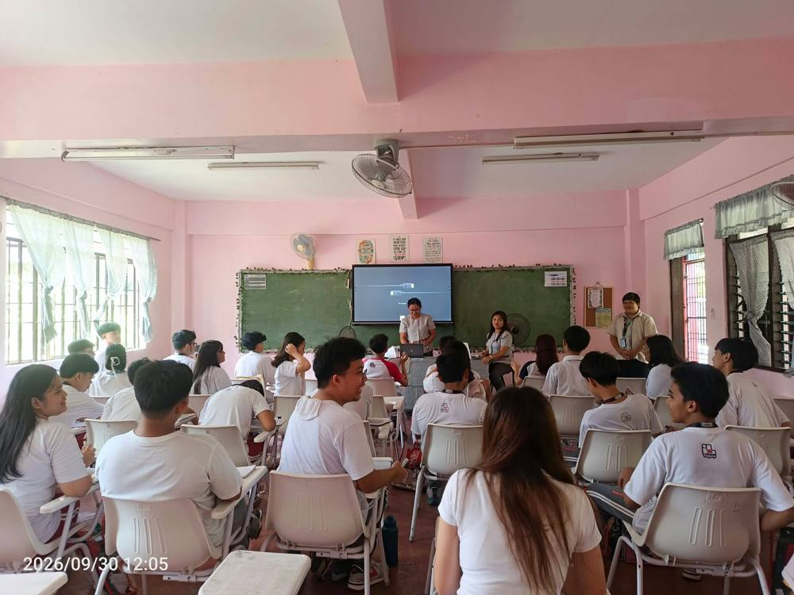
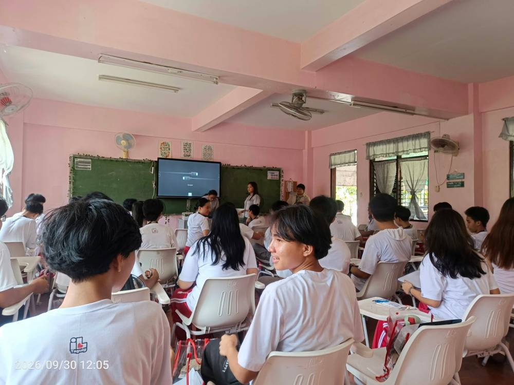

Field Study 1 & 2 E-Portfolio
A lab notebook of my observations, trials, and results as a pre-service science teacher. Taguig City University, College of Innovative Learning and Teaching.
InIntroduction
What this portfolio is and how to read it.
This e-portfolio documents my Field Study 1 (observation) and Field Study 2 (participation and teaching tasks). Like a science experiment, each week records what I planned, what I observed, what I did, and what I concluded. Use the element tiles above to jump between sections.
[ Edit: add one or two sentences about why you made this portfolio and what you hope readers learn from it. ]
PrStudent Profile
Who is behind the experiments.
(add image)
- Full name
- Ian [ Surname, Given Name, M.I. ]
- Student number
- [ Add student number ]
- Program and major
- Bachelor of Secondary Education (BSEd), Major in Science
- Academic year
- [ e.g., 2026–2027 ]
- Course
- [ Course code and title: Field Study 1 / Field Study 2 ]
- Field Study adviser
- [ Add name ]
- Cooperating school
- [ Add school ]
- Cooperating teacher
- [ Add name ]
Brief biography
[ Write 3–5 sentences: where you are from, why you chose to teach science, and what you enjoy outside class. ]
Personal educational philosophy
[ Complete the sentence: "I believe students learn science best when..." then explain in 3–4 sentences. ]
Career objectives
[ Short-term (licensure, first teaching post) and long-term goals. ]
GoLearning Goals
My hypotheses for Field Study 1 and 2.
Field Study 1: Observe
[ Goal 1: e.g., Identify strategies teachers use to explain abstract science concepts. ]
[ Goal 2: ... ]
Field Study 2: Participate
[ Goal 1: e.g., Assist in preparing and delivering a short science lesson. ]
[ Goal 2: ... ]
Expectations
[ What do you expect to learn, find hard, and improve? ]
ScCooperating School Profile
The laboratory where the fieldwork happens.
School profile
[ Name, address, type (public/private), year founded, student population. ]
Vision
[ Paste the school's vision statement. ]
Mission
[ Paste the school's mission statement. ]
Core values
[ List the core values. ]
Organizational structure
[ Insert org chart image or list: Principal, department heads, science teachers. ]
School facilities
[ Science lab, library, computer room, covered court, etc. Add photos where permitted. ]
WkWeekly Documentation and Reflection
One entry per week. Open a week to see its fields.
Photo documentation





PdProfessional Development and Activities
Seminars, webinars, workshops, lecture series, conferences, mock board exams, assemblies, extension programs, and other institutional events.
ApProfessional Growth Action Plan
The next experiment: how I will improve.
| Area for improvement | Action plan | Expected outcome | Timeline |
|---|---|---|---|
| [ e.g., Classroom management ] | [ e.g., Observe two experienced teachers and trial three routines ] | [ e.g., Smoother transitions during lab work ] | [ e.g., Weeks 5–10 ] |
| [ Area 2 ] | [ Action ] | [ Outcome ] | [ Dates ] |
| [ Area 3 ] | [ Action ] | [ Outcome ] | [ Dates ] |
AxAppendices
Supporting documents. Tick each one as you attach it.
| Component | What graders look for | Weight |
|---|---|---|
| Content completeness | All required contents are complete and relevant. | 25% |
| Organization and presentation | Well-organized, visually appealing, easy to navigate. | 20% |
| Documentation and evidences | Learning evidences, photos, and artifacts are complete and appropriate. | 20% |
| Reflection and learning | Meaningful learning, critical thinking, professional growth. | 20% |
| Professionalism and writing quality | Accurate, clear, well-written, free of major errors. | 15% |